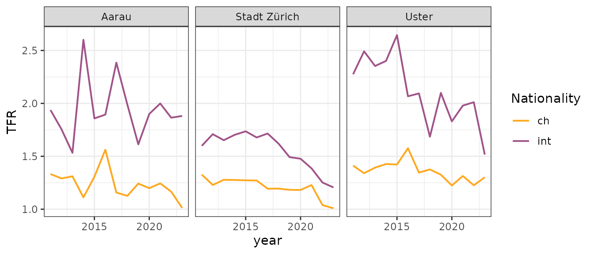
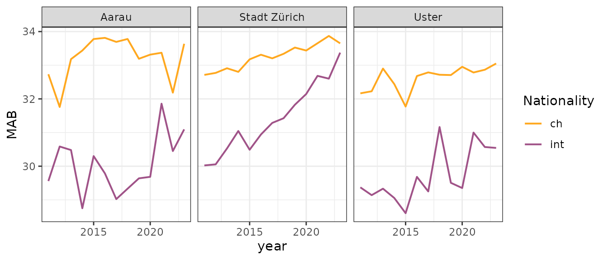
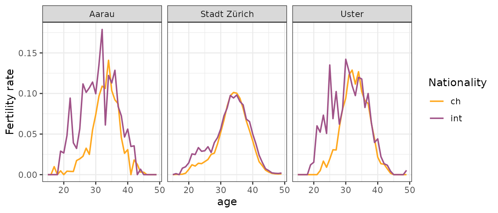

Overview
Here the birth rate forecast according to the methodology of the FSO (Federal Statistical Office) is used. The first step is to prepare the model input data. The starting point is past birth and population data.
Three input data sets are to be prepared:
- TFR (total fertility rate) per year
- MAB (mean age of the mother at birth) per year
- fertility rate per age year
If the final forecast should distinguish by nationality and/or spatial unit, the three input data sets must also differentiate according to these variables.
Required data
You need birth and population data from the past to prepare the input data. If you don’t have such data at hand, you can run the functions with example data. Regardless of whether you bring your own or use example data, the structure of the data frames require the following variables:
| data | description | variables required |
|---|---|---|
| birth data | The historical number of births by females aggregated per demographic unit and year. |
|
| population data | Historical population records of females in a pre-defined age range (‘fertile age’, often 15 to 49) aggregated per spatial unit, year, age, and nationality. |
|
Births
Currently, the FSO does not publish historical births data as open data. However, we have received permission to use and publish the data in propopbirth. In the propopbirth package, the original data from the FSO is preprocessed, adapting column names and factor levels, and the municipality numbers are replaced by municipality names.
An excerpt of data for three selected municipalities looks like this:
Population
Historical population records from the FSO can be obtained with the
function propopbirth::get_population_data, defining time
span, spatial units and further specific arguments:
fso_pop <- get_population_data(
number_fso = "px-x-0102010000_101",
year_first = 2010,
year_last = 2023,
age_fert_min = 15,
age_fert_max = 49,
spatial_code = c("4001", "0198", "0261"),
spatial_unit = c("Aarau", "Uster", "Stadt Zürich"),
binational = TRUE
)
# ✔ Fetching FSO metadata for table "px-x-0102010000_101" [278ms]
# ✔ Querying FSO population data [30.9s]An excerpt of the data for three selected municipalities looks like this:
Create input data
First, the mean annual population is calculated for females within the so-called ‘fertile age’ (usually 15 to 49). For each group (e.g. spatial unit, age, nationality) and year the mean population is calculated by the average of the population at the beginning and the end of the year.
Second, the births per year and group (e.g. spatial unit, age, nationality) are divided by the mean population (number of women in this group). This gives the age-specific fertility rate per year and group.
The TFR (total fertility rate) is calculated as the sum of the age-specific fertility rate over age per year and group (spatial unit, nationality).
The MAB (mean age of the mother at birth) is also computed based on the age-specific fertility rate per year. For this calculation a weighted average over age is used.
The parameter fert_hist_years determines how many years
are used to calculate an average age-specific fertility
rate. The FSO usually uses only one year for its cantonal
calculations. However, age-specific fertility rates can vary
substantially from year to year, especially for small spatial units.
Therefore, it makes sense to take the average over multiple years. For
this computation the births and population are averaged over the years;
then the ratio between births and population is calculated.
input <- create_input_data(
population = fso_pop |>
dplyr::filter(spatial_unit %in% c("Aarau", "Uster", "Stadt Zürich")),
births = fso_birth |>
dplyr::filter(spatial_unit %in% c("Aarau", "Uster", "Stadt Zürich")),
year_first = 2011,
year_last = 2023,
age_fert_min = 15,
age_fert_max = 49,
fert_hist_years = 3,
binational = TRUE
)TFR
ggplot(input$tfr) +
geom_line(aes(x = year, y = tfr, color = nat), linewidth = 0.7) +
scale_color_manual(values = c("#ffa81f", "#A05388")) +
labs(color = "Nationality", y = "TFR") +
facet_wrap(~spatial_unit) +
theme_bw()
MAB
ggplot(input$mab) +
geom_line(aes(x = year, y = mab, color = nat), linewidth = 0.7) +
scale_color_manual(values = c("#ffa81f", "#A05388")) +
labs(color = "Nationality", y = "MAB") +
facet_wrap(~spatial_unit) +
theme_bw()
Age-specific fertility rate
ggplot(input$fer) +
geom_line(aes(x = age, y = fer, color = nat), linewidth = 0.7) +
scale_color_manual(values = c("#ffa81f", "#A05388")) +
labs(color = "Nationality", y = "Fertility rate") +
facet_wrap(~spatial_unit) +
theme_bw()